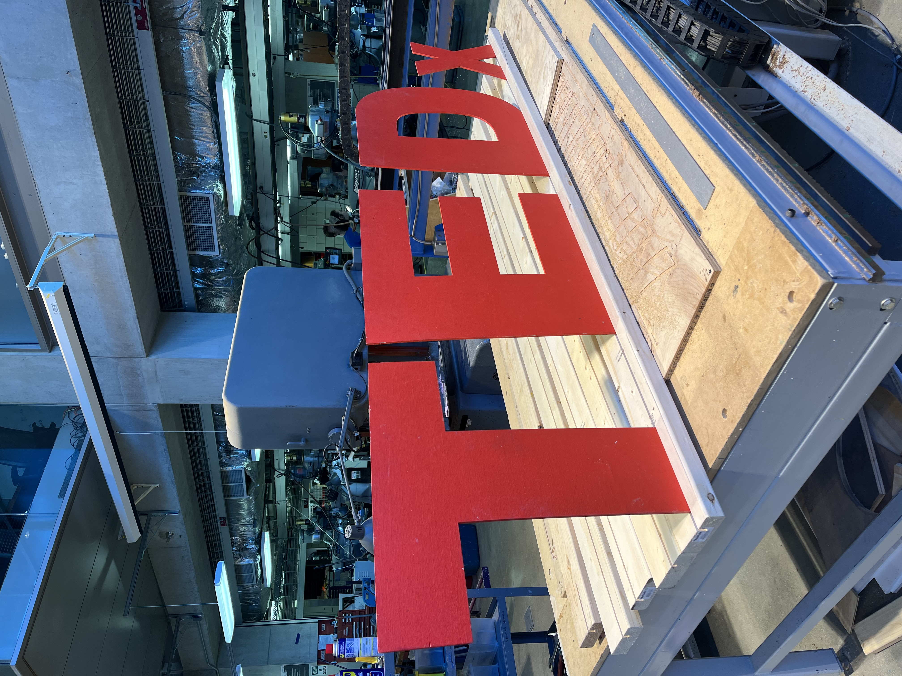
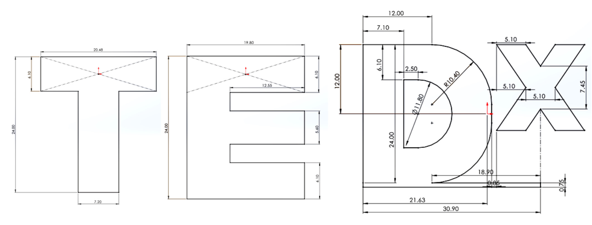

Details
I was commissioned by TED Talk club at Northwestern University to design a portable solution to hold wooden letters upright for their annual conference. I had to develop a method for quickly setting up the TEDXNorthwesternU sign that can be performed by members of the organization. The setup process must be able to be transported and easily stored. Also, the design must follow the TED corporate branding so that it can be posted on social media.

Prototyping: Finding ways to effectively hold the iconic TEDx wooden letters upright while being able to change the spacing between each letter.

Finishing: Painting the wood in a non-reflective coat. The thickness of the paint was taken into account to make sure the letters fit within a tolerance of 1/64th of an inch.

Presenting: The sign worked perfectly during the performance and will be used in future TEDXNorthwesternU presentations since it can be easily assembled and disassembled.
-

-

- 